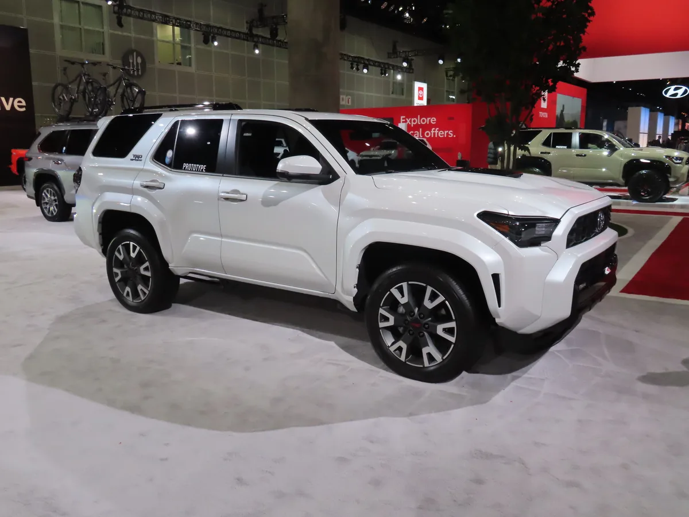

▲ 싼타크루즈는 유니바디 픽업이다. 현대차가 준비하는 다음 픽업은 프레임 바디로 알려졌다 ⓒ Wikimedia Commons
1. 무엇이 확인됐나
현대차가 북미 시장용 중형 픽업을 준비하고 있습니다. 출시 시점은 2029년으로 예상되고, 차명은 아직 정해지지 않았습니다.
핵심은 구조입니다. 이 차는 별도 프레임(body-on-frame)을 씁니다. 지금 파는 싼타크루즈와는 설계 출발점이 다릅니다.
픽업 하나로 끝나지 않습니다. 같은 플랫폼을 쓰는 프레임 바디 SUV 파생 모델도 함께 검토되고 있습니다. 현대차의 2030년 글로벌 555만 대 목표에서, 새로 여는 세그먼트가 성장분의 상당 부분을 맡는 구조입니다.
2. 유니바디와 프레임, 무엇이 다른가
싼타크루즈는 유니바디입니다. 투싼과 뼈대를 공유하는, 승용차 구조 위에 짐칸을 붙인 형태입니다. 승차감과 연비, 도심 주행에서는 유리합니다.

▲ 싼타크루즈의 적재함. 유니바디 구조라 견인과 적재의 상한이 프레임 바디보다 낮다 ⓒ Wikimedia Commons
프레임 바디는 사다리 모양의 별도 골격 위에 차체를 얹습니다. 무겁고 승차감이 불리한 대신, 비틀림에 강하고 견인과 적재 한계가 높습니다. 험로에서 차체가 받는 응력을 프레임이 흡수하는 구조입니다.
이 차이는 곧 고객층의 차이입니다. 유니바디 픽업은 SUV를 대신할 라이프스타일 차량으로 팔립니다. 프레임 바디 픽업은 트레일러를 끌고, 짐을 싣고, 비포장을 다니는 사람들의 차입니다. 미국 중형 픽업 시장의 중심은 후자입니다.
3. 볼더와 크레이터가 보여 준 것
현대차가 공개한 볼더(Boulder)와 크레이터(Crater) 콘셉트가 이 방향의 예고편입니다. 각진 형태, 큰 타이어, 높은 지상고를 특징으로 합니다.
비교 대상으로 거론되는 차는 포드 브롱코와 토요타 4러너입니다. 둘 다 프레임 바디 오프로더이고, 미국에서 확고한 팬층을 가진 모델입니다.

▲ 포드 브롱코. 현대차 콘셉트들이 겨냥하는 세그먼트의 대표 모델이다 ⓒ Wikimedia Commons
파워트레인은 확정되지 않았습니다. 하이브리드와 EREV(주행거리 연장형 전기차)가 검토 대상으로 언급됩니다. 순수 전기차로 가지 않는다는 점이 중요한데, 견인 시 주행거리가 급감하는 문제가 전기 픽업의 최대 약점이기 때문입니다.
4. 왜 조지아에서 만드나
생산 후보지는 조지아의 현대차그룹 메타플랜트입니다. 현재 아이오닉 5, 아이오닉 9, 기아 스포티지 하이브리드를 만드는 공장입니다.
이유는 관세와 물류입니다. 미국에서 팔 차를 미국에서 만들면 관세 부담과 운송 비용이 줄어듭니다. 다만 수익성을 확보하려면 부품도 현지에서 조달해야 하고, 이 부분은 아직 과제로 남아 있습니다.
호세 무뇨스 CEO는 여기서 한 걸음 더 나갔습니다. "미국은 내수뿐 아니라 수출을 위한 생산 거점이 될 수 있다"는 것입니다. 미국 공장이 북미와 중남미를, 한국 공장이 아시아와 동부 시장을 맡는 지역 분업 구조가 검토되고 있습니다.
5. 상대는 타코마다
직접 경쟁 상대로 지목되는 차는 토요타 타코마입니다. 미국 중형 픽업 시장에서 오랫동안 기준점 역할을 해 온 모델입니다.

▲ 토요타 타코마. 미국 중형 픽업의 기준선이자 현대차가 넘어야 할 상대다 ⓒ Wikimedia Commons
파생 SUV의 상대는 4러너와 닛산 엑스테라 계열입니다. 픽업 한 대를 만들어 SUV까지 뽑아내는 방식은 이 세그먼트의 전형적인 개발 전략입니다. 개발비를 나눠 쓸 수 있어서입니다.

▲ 토요타 4러너. 픽업 플랫폼에서 파생된 프레임 바디 SUV의 대표 사례다 ⓒ Wikimedia Commons
다만 위험도 큽니다. 프레임 바디는 기존 승용 플랫폼을 재활용할 수 없어 개발비가 따로 듭니다. 판매가 기대에 못 미치면 회수가 어렵습니다. 이 시장에 새로 들어간 브랜드들이 대부분 고전했던 이유이기도 합니다.
6. 국내에는 나올까
국내 출시 여부는 정해지지 않았습니다. 걸림돌은 세 가지로 정리됩니다.
첫째, 크기입니다. 미국 중형 픽업은 전장 5.3m를 넘는 경우가 많습니다. 국내 주차 규격과 도심 운용을 감안하면 판매층이 제한됩니다.
둘째, 기아 타스만과의 관계입니다. 같은 그룹 안에 이미 프레임 바디 픽업이 있습니다. 국내에 들여오면 수요가 겹칩니다. 타스만의 국내 판매가 기대에 못 미치고 있는 상황도 변수입니다.
셋째, 등록 구분입니다. 국내에서 픽업은 화물차로 등록돼 세제 혜택을 받습니다. 다만 파생 SUV는 승용으로 분류돼 셈법이 완전히 달라집니다.
정리하면 이렇습니다. 이번 계획의 핵심은 "현대차가 픽업을 하나 더 만든다"가 아닙니다. 승용 플랫폼 밖으로 나가 별도 프레임을 개발하고, 그것을 미국에서 만들어 수출까지 하겠다는 구조 전환입니다. 2029년까지 확인할 것은 차의 모습이 아니라 이 구조가 실제로 굴러가는지입니다.